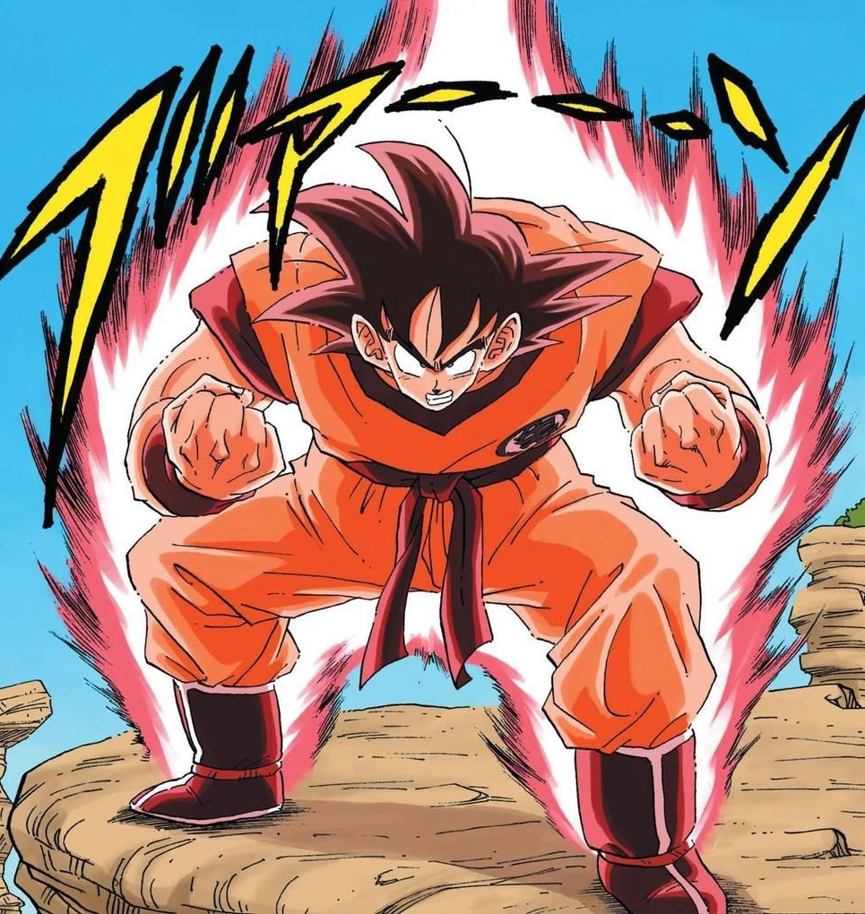

transformaciones de Goku
Ozaru

Esta fue la primera transformación de Goku con la que nos encontramos en la serie, y que también marca una de las características de la raza saiyajin. Si estos guerreros conservan su cola de simio y mira a la luna llena, se convierte en un gigantesco mono de varios metros de altura. En este estado, Goku no atiende a demasiadas razones, y además de aumentar su tamaño también gana una fuerza descomunal. Una vez se le corta la cola de mono, ya no hay que preocuparse más por esta transformación tan destructiva.
Kaio-Ken

Esta transformación permite a Goku aumentar su poder de forma exponencial durante un espacio de tiempo muy, muy corto. Así que tiene que ser certero para asestar golpes definitivos a sus enemigos que, en ocasiones, le han visto alcanzar un multiplicador de x100 que arrasa con todo, incluido al mismísimo Lord Slug (mejor conocido como el Señor Slug).
Super Saiyan fase 1

Este es el estado de ira que le recordaréis a Goku cuando vio cómo Freezer mataba a Krilin y se caracteriza por teñirse el pelo de color rubio. Sólo se puede alcanzar cuando un saiyano ha logrado un nivel considerable de pelea y es necesario entrar en un gran estado de ira o miedo, siendo que la primera vez que se usa el usuario puede llegar a estar en una especie de estado de shock. Todos los saiyanos que pueden transformarse en otros niveles de Supersaiyano han pasado primero por esta transformación.
Super Saiyan fase 2
 >
>Esta transformación es capaz de multiplicar 100 veces el poder de Goku con un aspecto mucho más estilizado, musculado y con un pelo todavía más erizado al viento. Su aura, ahora, también desprende ráfagas eléctricas.
Super Saiyan fase 3


:quality(75)/cloudfront-us-east-1.images.arcpublishing.com/elcomercio/SFDRR4XRVFGBNC6ZWIFBRZA6T4.jpg)